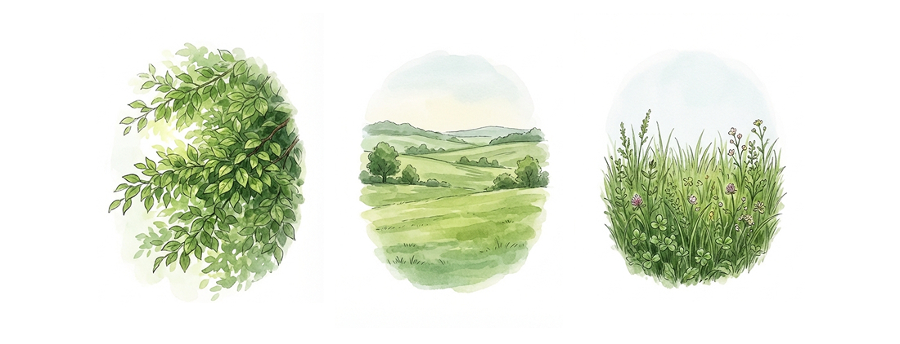
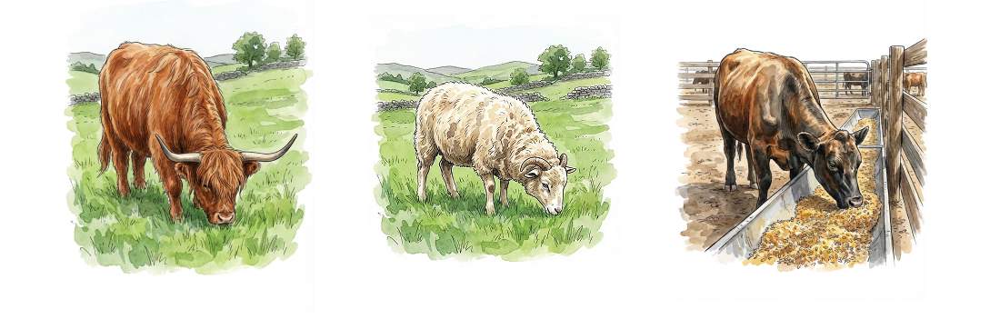
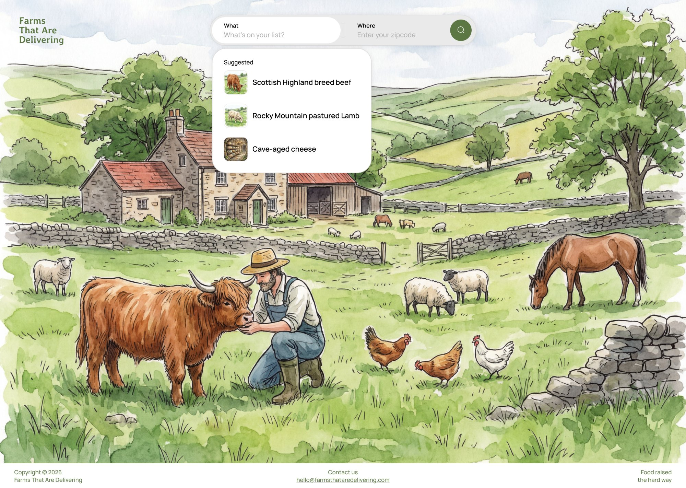

Farms That Are Delivering
- Product strategy and leadership
- UI/UX design and product development
- User research and validation
- Branding and marketing
- Farm research and curation
- Over 1 million searches in 3 months
- Curated 1,300+ farms from 14,000+
- Featured in the Wall Street Journal, NPR, and Bon Appetit
- 60,000 annual views years after sunsetting
- Currently relaunching with AI-powered farm discovery
In early 2020, when the pandemic hit, grocery stores in NYC were struggling to keep shelves stocked. My cofounder David and I were both living in the city and running into the same problem: it was getting really hard to find quality food. I found a local farm that delivered directly to my door, and the experience completely changed how I thought about food. The quality, the care that went into how the animals were raised, all of it was on a different level than what you find in a grocery store. I told David about it, he placed an order too, and had the same reaction.
We knew other people were dealing with the same thing. So we decided to put something together.
The first version of the site was incredibly simple. It was just a list of farms that delivered in the NYC area. Farm name, location, and a link to their website. That was it. No search, no filters, no design system. We just wanted to get something up that people could start using right away.
That turned out to be the right call. The site started to gain traction on social media almost immediately. People were sharing it, local news picked it up, and within a few weeks we were getting way more traffic than we expected.
Once we saw the demand, we knew we needed to go bigger. David and I started scouring the internet for farms across the country. What we discovered is that these nonconventional farms were very different from farms that supply major grocery stores. They were going the extra mile in how they raised their animals, what they fed them, and how they processed everything. We wanted to capture all of that detail because we knew it could become really powerful filters and discovery tools down the road.
We went through over 14,000 farms. The criteria for making the list was straightforward: the farm had to have a working website, they had to offer delivery or allow pickup at the farm, and they had to sell their own products. That alone eliminated a huge number from the list.
| A | B | C | D | E | F | G | H | |
|---|---|---|---|---|---|---|---|---|
| 1 | Farm | State | Products | Delivery | Pickup | Breed | Feed | Status |
| 2 | Parker Pastures | CO | Beef, Lamb | Yes | Yes | Angus cross | 100% grass | Listed |
| 3 | Lava Lake Lamb | ID | Lamb | Yes | No | Rambouillet | Wild grasses | Listed |
| 4 | Elmwood Stock Farm | KY | Pork, Beef, Chicken | Yes | Yes | Berkshire | Non-GMO grain | Listed |
| 5 | Primal Pastures | CA | Chicken, Pork, Beef | Yes | No | Heritage breeds | Pasture + grain | Listed |
| 6 | Valley Farms Inc. | OH | Eggs | No | No | – | – | Skipped |
The process was slow, especially at first. David and I were doing it ourselves on top of our full-time jobs at Mogul, staying up late many nights. Eventually my wife started helping, and we hired someone else too. So at one point we had four people going through farms, checking websites, documenting what they offered, and recording details about their practices.
With the database built, I designed a clean search experience. The core interaction was a search bar where users could enter their address and instantly see nearby farms. It was focused and fast, designed to get people what they needed without any extra steps.
As traffic grew and we reached over 1 million searches in the first three months, we also started to add more detailed information to each farm listing. We captured things like product offerings, animal breed, feed, and butchering methods. The more we dug in, the more we realized that every farm had a story worth telling.
We noticed something interesting through a combination of data and direct user feedback. First, we looked at Google search data and saw that a lot of people were searching for things like "Los Angeles farms" or "farms near me" rather than typing in a specific address. We knew incorporating city and state-based pages would be good for SEO, but there was more to it than that.
We also put an email signup on the site and used those emails to send out questionnaires. What we found is that many users actually enjoyed the process of exploring what farms were near them and what made each one unique. Finding the right farm was a fun experience for people. Every farm had something different that spoke to different users, whether it was how they raised their animals, what breeds they worked with, or the story behind the farm itself.
That insight shifted our approach. We added city and state-based categories so users could browse farms by location. We also introduced a rotating headline on the homepage to show the full range of what you could search for, helping new users instantly understand the breadth of the platform.
As we continued to grow, we rebranded from Farms That Are Delivering to Aina, which means "land" or "earth" in Hawaiian. With the new brand came a more intentional focus on user experience.
We added an "Add My Farm" feature that let farmers create accounts and list their own products directly on the platform. More and more farms were reaching out to join, so giving them a self-service option made sense.
On the customer side, we started highlighting standout farms that were doing things differently. Farms like Parker Pastures, where cows graze year-round on Colorado's wild grasses, or Lava Lake Lamb, where sheep roam freely across a million acres in the Rockies. These curated spotlights helped users connect with the values behind the food and brought a richer, more story-driven experience to the platform.
The platform was featured in the Wall Street Journal, NPR, Bon Appetit, Time Out, and Ciaooo Magazine for its impact during the pandemic. We weren't a tech company trying to disrupt farming. We were two people who found a real gap and built something that connected families with farms that cared about how they raised their food.
After about three years, we had to sunset the platform. David and I were both getting increasingly busy at Mogul, and with a small team there just wasn't enough bandwidth to keep both projects going at the level they deserved.
But the work wasn't wasted. We had built a real product that people loved, learned how to do user research and iterate on a live product with real users, and proved that there was a market for connecting people directly with small farms. Even after sunsetting the platform, the site continued to get about 60,000 views a year all from backlinks built through press coverage, social sharing, and SEO.
In 2025, David and I got back together to relaunch the platform. We're starting fresh, but this time we have two things we didn't have before: experience and AI. We also made the decision to go back to the original name instead of keeping the Aina rebrand. The original name was still driving 60,000 annual views to a site that wasn't even live. That kind of organic traffic is too valuable to walk away from, especially when the name itself tells people exactly what the platform does.
The first time around, we spent months manually going through 14,000 farms. This time, we built scrapers that automatically go through farm lists, eliminate farms without websites or delivery options, and even find delivery radiuses. We also built scrapers that visit each farm's website and tag all the details that make farms unique. And one of the biggest additions this time is that we're capturing what each farm actually has for sale, so search results can show live inventory. That wasn't possible the first time without a huge manual effort.
Starting over sounds daunting, but it's actually the best thing because we get to apply everything we learned the first time. We know what information matters to users, we know what makes a good farm listing, and we know what kind of experience people want.
One of the things we're doing differently this time is being much more intentional about how Farms That Are Delivering looks and feels. We landed on watercolor illustrations as the core visual language for the brand. The reason is that watercolor has a softness and warmth to it that reflects the care and gentleness that these farmers put into raising their animals. It feels handmade, which is exactly what these farms are.
At the same time, we're pairing those illustrations with clean, modern design elements. The farming industry is old, and most of the websites and brands in this space feel outdated. We want to sit at the intersection of something that feels natural and trustworthy but also feels current and forward-thinking. When someone lands on Farms That Are Delivering, we want them to feel like this is a place they can trust to help them find a great farm.


